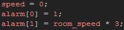

Tutorial
Page 4 of 12
Creating Particles With D'n'D (I)
The built in effects are all fine and well for simple graphics, but they are a bit bland and can only use one color at a time. They also offer no precise control over the size or the alpha of the particles being created and,
since they are included as standard with GameMaker:Studio they are far from original! Thankfully we can do better than them using the Drag'n'Drop actions for particles that can be found on the Extras
tab of the object interface.
So, create a new object and call it "obj_DnD_Firework". This will be our new custom firework effect, and we are going to make a catherine wheel type firework to compliment our previous built in particle
rocket effect.
Add a Create Event and then drag a code block and add the following code:

This will prevent the object from moving and set the necessary control alarms too. Now we need to add create our particle system, which is basically a "container" that is created by you and into which
you can place particles and emitters to be used at any time.
Note that you cannot create any particles other than the built in particle effects without having first defined a system in which to create them!
To do this, go to the Extras Tab and drag the Create Particle System icon into the actions list and set it's depth to 0 (particle systems can have depth too, just like objects and tiles). We are now
goingto create our first particle which will be a smoke effect which will rise up off of the main effect just like a real firework.
For any new particle you must start by defining it's properties, and that means deciding which particle we are going to use. The D'n'D interface offers you a choice of up to 16 different particles that can all be
customised to suit your needs. Drag the Create Particle icon into the actions window and fill out it's properties as shown below:
For "type" we should choose "type 0" as this is our first particle and we should give it a cloud shape from the predefined shape list with no sprite (we could use a custom sprite, but for this it's not needed).
Size is given as a range of values, and this is a standard mechanism when creating particles in GameMaker:Studio. You see, particles are created by the system based on a general set of rules,
but each particle can be slightly different depending on how the range for different properties is set. For example, this particle has a size range from 5% of it's base scale (0.05) up to 20% of it's base scale, so
all particles will be created within that range of sizes to start with. Should you need a specific size then you should set both the min and max values to be the same.
You will notice too that the "incr" option is set to 0.02. This value controls the size increment each step, and setting it to a positive value will add that percentage scale to the particle each step, in this
case it's a 2% increase every step. We can set this to 0 for no size change, or even to a negative number to get a particle that reduces in size every step.
With the basic properties set, it's time now to set the color for the particle, so drag a Particle Color icon onto the action list and fill it out as shown:
As before choose "type 0" as the particle we are working with, then set the color mix to "changing". In this way we will have a nice blend of color over each particle lifetime from the first color to the second
rather than a general mix of colors being chosen for each particle. The colors themselves should be a light gray and a dark gray as this is a smoke particle after all, and you should set the start alpha to
1 and the end alpha to 0, so that the individual particles will fade out over time.
Talking of time, we must also give our particles a lifetime in which to exist, and, as before with size, this can be defined as a range meaning that each infividual particle will have a different lifetime than all
the others, with none being above or below the given range. To set this drag the Particle Life icon into the action list and use the following settings:
Lifetime for a particle is calculated in steps, so the above particle will "live" a minimum of 5 steps and a maximum of 30 steps.
The final thing we should do to this particle is give it some movement, since smoke does rise after all! We can do this by setting the Particle Gravity as shown here:
Just like instances, particles can have their own gravity force and direction, which will only act on the type of particle specified.
Now we have done the smoke, save the game and then pass onto the next section where we will define the firework effect itself.
Click on the Next button to go to the next page of the tutorial.